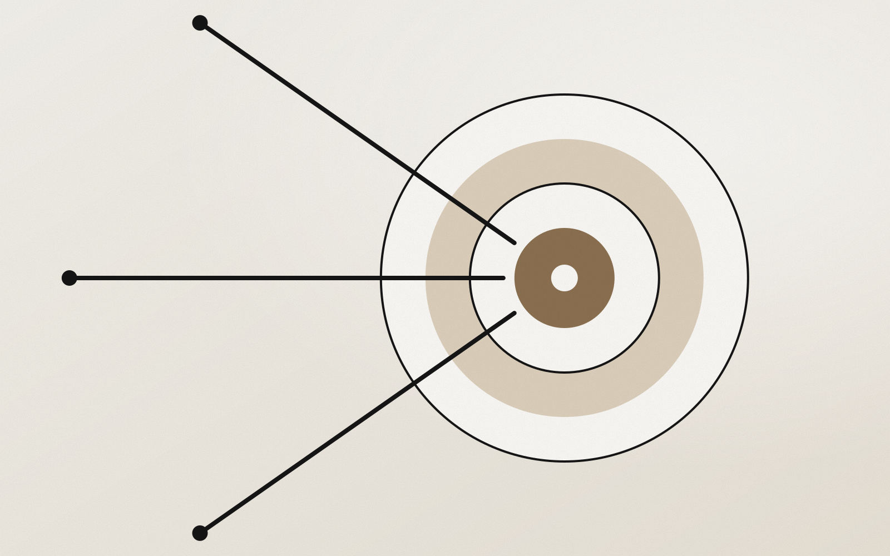

Strategy
Cosa fa un consulente aziendale e quando serve a una PMI
Quando un'azienda smette di crescere, o cresce in modo disordinato, l'imprenditore di solito prova prima a risolvere da solo: una nuova campagna, un nuovo commerciale, un nuovo software. A volte funziona. Più spesso sposta il problema da un'altra parte. Il consulente aziendale serve proprio in questo momento: quando serve qualcuno che guardi l'azienda dall'esterno, con metodo, e aiuti a capire dove intervenire prima di investire altro tempo e altro budget.
Cosa fa, in concreto, un consulente aziendale
Il lavoro si può riassumere in tre fasi. La prima è capire: leggere i numeri, parlare con le persone, osservare come funzionano davvero vendite, marketing e processi. La seconda è decidere: tra le tante cose che si potrebbero migliorare, scegliere le due o tre che muovono davvero la crescita, e metterle in ordine. La terza è fare: accompagnare il team nell'esecuzione, misurare i risultati e correggere la rotta.
Un buon consulente non arriva con una soluzione standard. Arriva con un metodo per trovare la soluzione giusta per quell'azienda, in quel momento. E lascia qualcosa che resta anche dopo: processi più chiari, indicatori condivisi, un modo di decidere più ordinato.
I segnali che indicano che serve
- La crescita si è fermata e non è chiaro perché: il mercato c'è, il prodotto funziona, ma i numeri non si muovono.
- I contatti arrivano ma si convertono poco: il marketing produce richieste, le vendite non le chiudono, e ognuno dà la colpa all'altro.
- Tutto dipende dal fondatore: le vendite, le decisioni, le relazioni con i clienti chiave.
- Ci sono troppe iniziative aperte e nessuna priorità: ogni settimana si parte con qualcosa di nuovo.
- I dati ci sono ma non guidano le decisioni: report che nessuno legge, dashboard piene di numeri poco utili.
Se ti riconosci in almeno due di questi punti, un'analisi esterna ti farà risparmiare tempo. Il punto di partenza più utile è quasi sempre un audit business e dei processi.
Consulente aziendale, consulente marketing, agenzia: le differenze
La confusione è comune. Un'agenzia esegue attività su canali specifici: campagne, social, sito. Un consulente marketing lavora su posizionamento, acquisizione e funnel. Un consulente aziendale parte più a monte: modello di business, offerta, processo commerciale, organizzazione e numeri. Nella pratica, per una PMI le cose si intrecciano: per questo nel mio lavoro la consulenza aziendale tiene insieme strategia, marketing, vendite e dati sotto un'unica regia.
Come si svolge un percorso di consulenza
Di solito si parte da una conversazione per capire il contesto. Poi c'è un audit iniziale, che dura qualche settimana: interviste al team, analisi dei dati, mappatura dei processi. Alla fine si condivide una lista di priorità con una roadmap a 90 giorni. Da lì, l'azienda può procedere da sola oppure con un affiancamento continuativo, con incontri periodici e verifiche sui numeri.
Il valore si misura sui risultati, non sulle ore. Nei progetti recenti i primi risultati misurabili sono arrivati tra i 2 e i 6 mesi: dal +20% di fatturato mensile in due mesi per un gruppo della ristorazione ai 40 nuovi clienti B2B in sei mesi per una startup proptech.
Come scegliere il consulente giusto
Guarda i risultati concreti che ha ottenuto, non solo le competenze dichiarate. Chiedi come misura il proprio lavoro. Diffida di chi propone soluzioni prima di aver capito il problema. E scegli qualcuno con cui ti trovi a tuo agio a parlare di numeri, anche quando non sono buoni. Se cerchi un consulente sul territorio, ne parlo più nel dettaglio in come scegliere un consulente aziendale a Roma.
FAQ
Quanto costa un consulente aziendale?
Dipende dal perimetro. Un audit iniziale ha di solito un costo definito; un affiancamento continuativo dipende dalle ore e dalle aree coinvolte. Chiedi sempre una proposta scritta con attività, tempi e risultati attesi.
Un consulente aziendale serve anche a una startup?
Sì, soprattutto nel passaggio dai primi clienti a una crescita ripetibile, quando servono priorità chiare, un processo commerciale e i primi indicatori.
Dopo quanto tempo si vedono i risultati?
I primi segnali arrivano spesso nei primi mesi, se le priorità sono giuste e il team le mette in pratica. L'importante è concordare all'inizio come misurarli.
Vuoi capire da dove partire nella tua azienda? Scopri la consulenza aziendale.